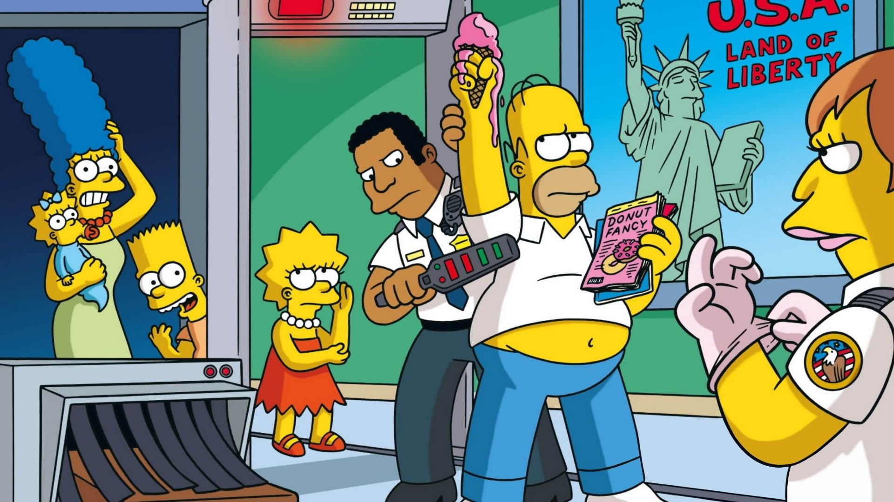

 2. Quién es conocido por decir “¡ja!” en Los Simpsons? Bart Simpson Nelson Muntz El actor secundario Bob Milhouse Van Houten
5. ¿Qué pidió Bart por Navidad en “Los Simpson asados en una hoguera”? Pistola Tatuaje Nunchucks Coche
7. Marge tiene dos hermanas gemelas. ¿Cómo se llaman? Priscilla y Selma Patricia y Sabrina Patrice y Samantha Patty y Selma